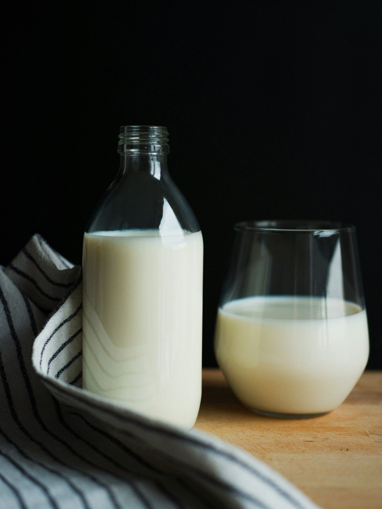
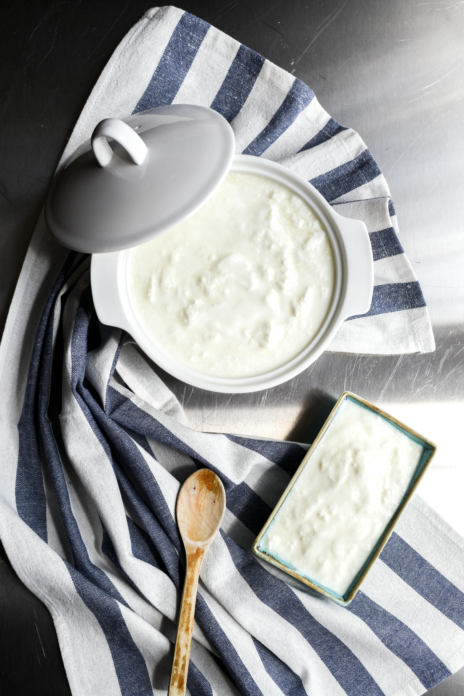
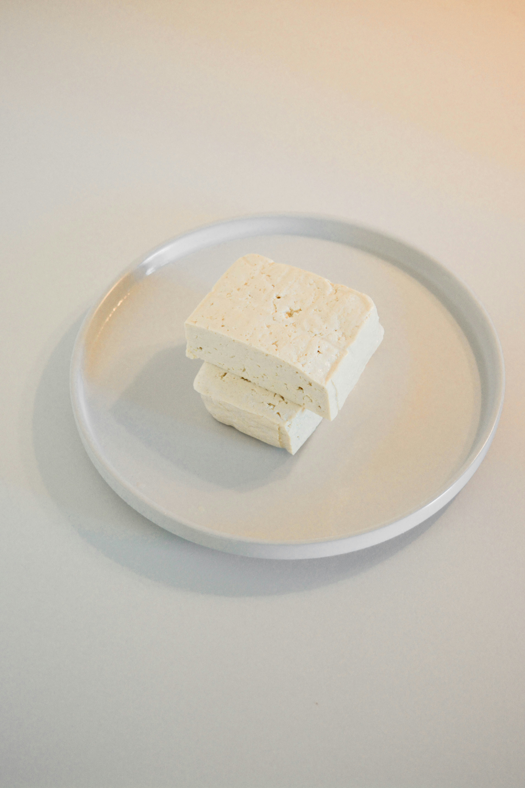
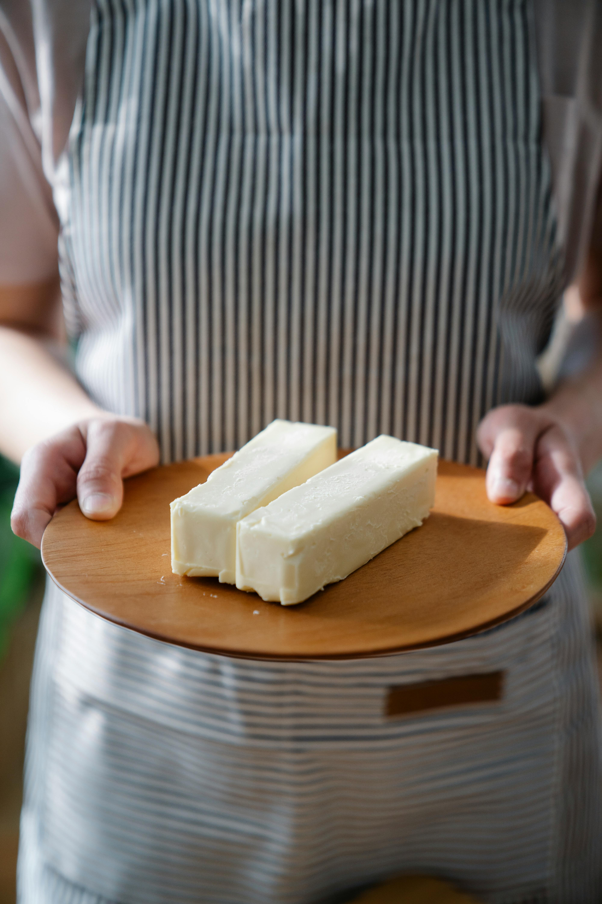
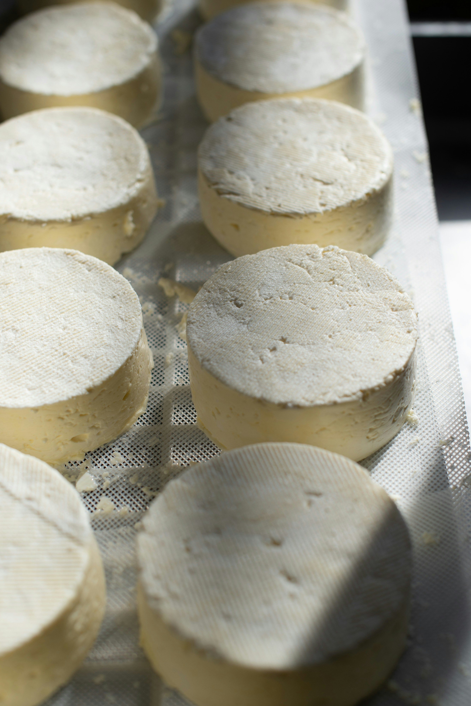
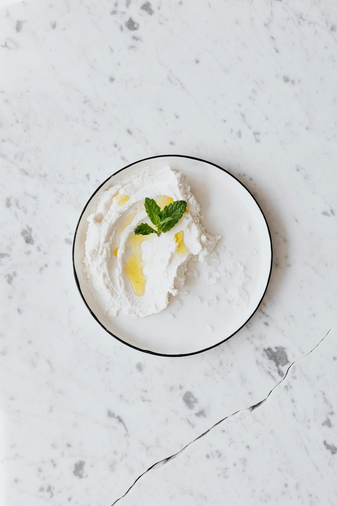
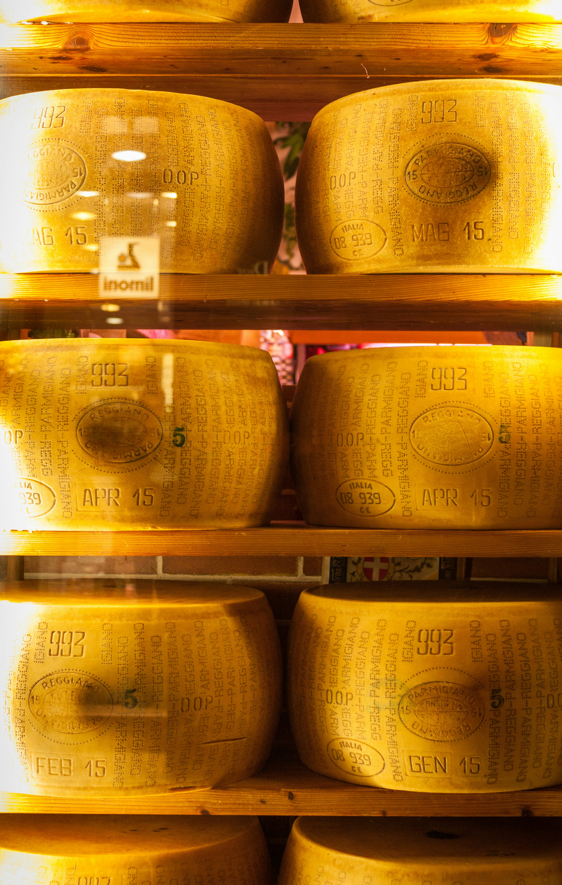
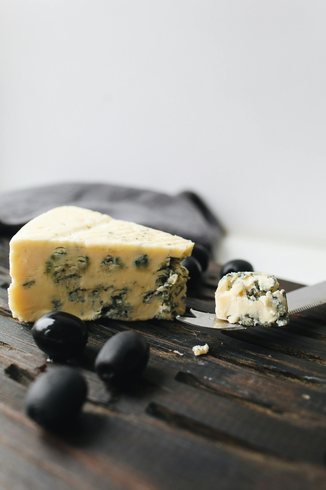
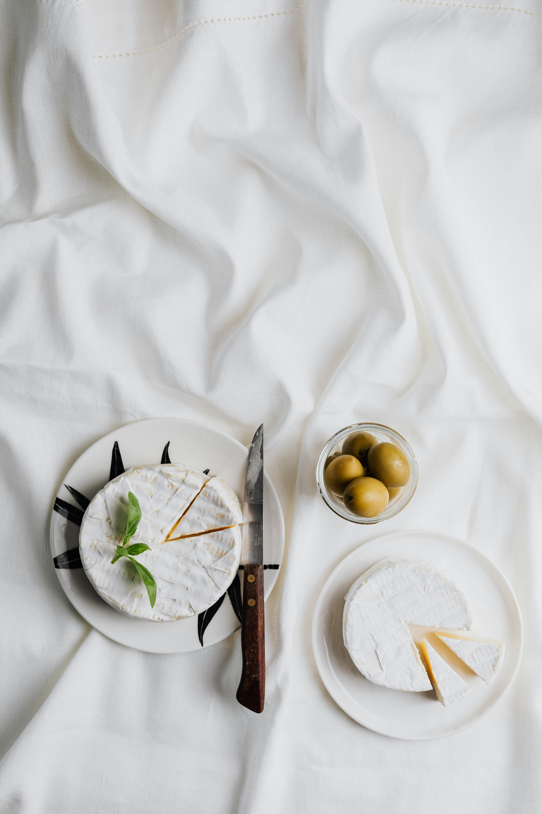

Източник: Pexels.com
Прясно краве мляко-3,6% масленост
Произведено в България от висококачествено краве мляко. С натурален вкус и естествена масленост, без добавени стабилизатори, сухо мляко или растителни мазнини. Подходящо за директна консумация и домашно приготвяне на млечни продукти.
Цена 3,6 лева/литър

Източник: Pexels.com
Овче кисело мляко-6% масленост
Произведено в България от висококачествено овче мляко и традиционна закваска. С по-богат вкус и по-висока естествена масленост. Без добавки и сухо мляко. Подходящо за ценители на автентичното българско кисело мляко.
Цена 4,4 лева/500 грама

Източник: unsplash.com
Бяло саламурено сирене
Произведено от висококачествено краве мляко по традиционна технология. Сиренето зрее в саламура, което му придава плътна структура, балансиран солен вкус и характерен аромат. Без изкуствени добавки. Подходящо за директна консумация, салати и традиционни български ястия.
Цена 24 лева/килограм

Източник: Pexels.com
Краве масло-82% масленост
Произведено в България от висококачествена краве сметана по традиционна технология. Маслото е с плътна структура, чист млечен вкус и естествен аромат. Не съдържа изкуствени добавки. Подходящо за директна консумация, готвене и печене.
Цена 9,6 лева/250 грама

Източник: unsplash.com
Козе сирене
Произведено от прясно козе мляко по традиционна технология. Сиренето е с по-лек и свеж вкус, фина структура и характерен аромат. Подходящо за хора, които предпочитат по-леко усвоими млечни продукти. Не съдържа сухо мляко, растителни мазнини и изкуствени добавки.
Цена 32 лева/1 килограм

Източник: Pexels.com
Крема сирене
Свеж млечен продукт, произведен в България от пастьоризирано краве мляко и сметана. С нежна, кремообразна текстура и мек вкус. Подходящо за мазане, десерти, чийзкейк, сосове и солени рецепти. Без изкуствени добавки и растителни мазнини.
Цена 21 лева/килограм

Източник: unsplash.com
Кашкавал от краве мляко
Произведен по традиционна българска технология от краве мляко. С плътна структура, балансиран млечен вкус и добра разтегливост при термична обработка. Подходящ за директна консумация, сандвичи и готвене.
Цена 26 лева/1 килограм

Източник: Pexels.com
Синьо сирене
Синьо сирене, произведено от краве мляко по специална технология със селектирани благородни плесени. Отличава се с характерен пикантен вкус, кремообразна текстура и ясно изразен аромат. Зрее при контролирани условия, което позволява развитието на типичните синьо-зелени жилки.
Цена 5,2 лева/100 грама

Източник: Pexels.com
Сирене бри
Меко сирене с бяла благородна плесен и нежен млечен вкус. Произведено по класическа технология, с кратък период на зреене. С кремообразна вътрешност и фина кора. Подходящо за плато със сирена, салати и гурме ястия.